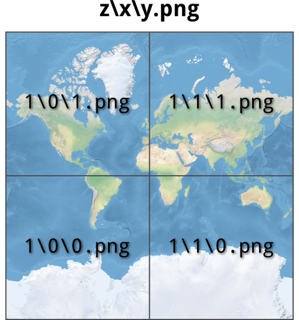

Avrei voluto partecipare e prendermi il “pezzo di carta”, ma non ci sono riuscito. Dai commenti al post, e da altri segnali, ho capito di essere riuscito a stimolare l’interesse di altri. In particolare mi sono caduti sotto gli occhi questo lungo pezzo di Giuseppe, questo commento di Fabio ed il tweet di sotto di Lucio.
@MapRevolution class has been great, looking forward to other similar experiences. Have fun & beer in Germany
Ho pensato allora di scrivergli, e proporgli di fare una piccola tavola rotonda online, in cui racconteranno la loro esperienza e si confronteranno su questa. Mi hanno risposto da subito in modo positivo e lunedì 23 settembre alle 21:00 faremo un hangout in realtime, che verrà ospitato su GEO+, la bella comunità sulla geomatica che si sta sviluppando in modo molto interessante su Google+ (ma questo è un altro post ).
Sarà qualcosa di molto informale, che nasce da questi belli e inaspettati “effetto domino” che nascono facilmente in rete. Giuseppe, Fabio e Lucio, il “pezzo di carta” se lo sono presi, ma la cosa per me più interessante è avere constatato come tre persone diverse per formazione, professione e interessi siano “caduti” dentro lo stesso corso. Questo avviene in tutte le aule (virtuali e non), ed a maggior forza in MOOC, ma i tre punti di vista differenti saranno un bel valore aggiunto per la narrazione dell’esperienza.
Ma chi sono Giuseppe, Fabio e Lucio?
Giuseppe Borruso, ricercatore universitario in Geografia Economica appassionato di Scienza dell’Informazione Geografica, co-fondatore di Geog-An-Mod (Geographical Analysis, Urban Modeling, Spatial Statistics). Appasionato di Mountain Bike, Nuoto e Sax.
Fabio Malfatti, etnoantropologo specializzato in storia orale, saperi tradizionali e gestione sostenibile del territorio. Geografia e mappe sono una passione e uno strumento di ricerca. Speleologo e alpinista.
Lucio Beltrami, laurea in architettura, gestore di dati per Seat Pagine Gialle a Torino. Interessi: Cartography, Camera, Cinema, Comics, (urban) Cycling.
Sarà l’occasione anche per testare una modalità di comunicazione, che speriamo possa dare la stura ad atri incontri di questo tipo. Sarebbe bello infatti replicare tanti James Fee, e fare i geohangout anche in Italia.
Sarà in real-time e sarà possibile anche ricevere domande e commenti. L’orario forse non è dei migliori, ma era l’unico che mettesse d’accordo gli studenti del corso. In ogni caso verrà tutto registrato e sarà visibile successivamente in qualsiasi momento.
Ci “vediamo” allora il 23!
NDR: si è aggiunto in corsa un altro “studente” del corso, che si è preso ‘il pezzo di carta’ with distiction. E’ Gianluca Calabretta e sotto trovate la sua short-bio.
Gianluca Calabretta: ingegnere ambientale alla ricerca della mappa perfetta. Attualmente si aggira circospetto tra enti pubblici, ed istituti di ricerca. Triste caso di avvelenamento neonatale da cartografia. Segue con disincanto tecnologia e fumetti. Fuori orario e’ possibile che lo vediate correre.
Poco più di due anni fa pubblicammo il primo post che introduceva il Geospatial Revolution Project, un ambizioso progetto della Penn State University nato con l’obiettivo di ampliare la conoscenza sulla storia, le applicazioni, le questioni legate alla privacy ed alla giurisprudenza e il futuro potenziale delle tecnologie spaziali. Ne nacque una delle esperienze più belle fatte come TANTO, la traduzione in Italiano dei sottotitoli dei 4 episodi, in collaborazione con Penn State University.
Oggi parte il primo corso su Coursera dedicato alle mappe, dal titolo “Maps and the Geospatial Revolution“, il cui docente - Anthony C. Robinson - è (guarda caso) della stessa università.
“Coursera” non credo abbia bisogno di presentazioni, è una di quelle cose che capita di citare quando si vuole evidenziare il bello del web. E’ una società di formazione in partnership con le migliori università e organizzazioni di tutto il mondo, per offrire corsi on-line gratuiti e per tutti. Sul loro sito si legge:
We envision a future where everyone has access to a world-class education that has so far been available to a select few. We aim to empower people with education that will improve their lives, the lives of their families, and the communities they live in.
Qualche giorno fa ho fatto 40 anni e mi sembra un momento della vita molto bello. Questo corso mi fa tornare indietro di 20 anni, alla voracità di conoscenza un po’ irrazionale e poco analitica, ma anche alla bocca amara fatta per certi brutti sapori e ai crampi per mancanza di materia prima (parlo solo di conoscenza ).
L’andy di 20 anni fa sarebbe stato felice di poter disporre di un corso di questo tipo e di avere una banda internet che consentisse di usufruire di servizi di questo tipo; l’Andrea di oggi si iscrive sapendo di non avere il tempo libero e leggero di quegli anni, e spera di poter arrivare in fondo.
Non so dirvi quanta qualità ci sarà, ma mi sembrava utile darne notizia e seguire la Rivoluzione Geospaziale.
Ieri sono stato uno dei relatori della sessione “Servizi di download e di interoperabilità” della conferenza OpenGeoData Italia, Istruzioni per l’uso. Ero presente in un ruolo che ho vestito per la prima volta in un conferenza: il redattore di TANTO (tra di noi scherzando diciamo “uno dei TANTI” ). E’ stato bello “interpretarlo”.
Della conferenza vi scriverò in un’altra occasione, probabilmente a 4 mani con Sergio Farruggia che invece è stato il moderatore della sessione ”Riuso e feedback per gli enti”. Lo stesso vale per l’intervento che ho fatto, di cui comunque a breve troverete pubblicate slide e registrazione video (insieme a quelle di tutti gli altri).
Voglio invece presentarvi subito e in modo sintetico, un lavoro che abbiamo fatto alcune settimane fa, e che ci ha dato lo spunto per l’intervento presentato a Roma. Si tratta di un lavoro di sottotitolazione e traduzione in italiano di un video semplice, breve ed efficace che illustra cosa sia l’OGC. Un lavoro simile a quello fatto per Geospatial Revolution Project, ma in quel caso ci occupammo soltanto della traduzione. Stavolta invece, a partire da un file senza correlazione tra testi e tempo, abbiamo prima sottotitolato in lingua originale il video, e poi lo abbiamo tradotto. Tutto questo si deve anche ad un bel dialogo instaurato con l’OGC, che ringraziamo anche per i toni e i modi con cui si è rivolto a noi.
Farlo è stato ancora una volta molto divertente. Il risultato è visibile facendo prima click sull’immagine sottostante e selezionando poi “Italiano” tra i sottotitoli.
In ultimo un doveroso grazie anche a Antonio Falciano che è stato essenziale per realizzare il lavoro sul video.
La cartografia digitale è ormai da tempo invasa da milioni di tasselli. I layer di Virtual Earth (che sono vecchio!), OpenStreetMap, Yahoo! Maps, Google Maps, ecc. sono da tempo distribuiti a pezzetti da 256×256 pixel e poi ricomposti nei nostri browser. Le modalità con cui la cosa viene realizzata sono “abbastanza” standard; se si prova però ad approfondire un po’, si scopre ad esempio una grande varietà nel definire l’indice numerico associato ad un dato tassello, di una certa zona del mondo, ad uno specifico livello di zoom. La mia amata/odiata Sicilia ad esempio, a livello di ingrandimento “6″, la posso richiamare nei modi diversi che vedete qui accanto, per tre dei più diffusi indici di tassellamento. Per approfondire il tema vi consiglio di partire da qui.
Nel tempo queste mattonelle cartografiche sono aumentate a dismisura e ce le troviamo anche in tasca. Penso ai nostri smartphone e al fatto che la quasi totalità delle basi cartografiche delle applicazioni che installiamo in questi sono distribuite a tasselli.
E nel prossimo futuro la diffusione sarà ancora più pervasiva, in quanto passeranno dall’essere consultati quasi esclusivamente tramite servizi/server web, all’essere letti direttamente da un file residente sul nostro terminale. Un esempio per tutti è quello del GeoPackage, un formato standard che l’OGC sta definendo, in cui le basi raster potranno essere archiviate proprio a tasselli. Un po’ come rasterlite di Sandro Furieri, che credo sia in qualche modo lo scheletro portante di questo nuovo formato OGC.
I tasselli sono talmente tanti che ormai spesso trovo negli hard-disk, pen-drive USB, DVD (come sono vecchio!), schede SD, ecc. quelle strane cartelle a loro volta suddivise in decine e decine (nel caso migliore) di sottocartelle, tipiche della struttura di archiviazione su file system di basi dati tassellate e piramidate.
Proprio per questo ho pensato di scrivere un articolo su come accedere ad un archivio cartografico di questo tipo, che in qualche modo è il complementare ad un altro scritto nel lontanissimo 2008 e in cui viene illustrato come tassellare un’immagine.
Come accedere ad un archivio cartografico a tasselli e ricomporlo in un unica immagine georeferenziata?
In sé la cosa sembra ovvia, in quanto si tratta di formati file leggibili da qualsiasi terminale con qualsiasi sistema operativo: parliamo infatti nella stragrande maggioranza dei casi di .jpg e .png. Sfoglio le cartelle, faccio doppio click su una delle immagini e le visualizzo in un attimo. E dove è finita l’informazione geografica?
Se le apro infatti con un visualizzatore di immagini è normale che le uniche coordinate riconosciute siano i pixel, ma se provate ad aprire lo stesso tassello con una applicazione GIS, il risultato non cambia. L’informazione geografica infatti non è presente nemmeno in qualche tag nascosto internamente ai file e quindi non può essere letta. Per assurdo tutti i tasselli sembrano sovrapposti nello stesso punto della terra, ad una sola risoluzione.
L’arcano si risolve proprio nella lettura della struttura della cartella in cui sono archiviati e quindi nella conoscenza dell’indice utilizzato per generare tutti i pezzetti di mondo alle varie scale di ingrandimento. Data infatti una certa modalità di tassellamento, ogni punto della terra è associato ad una certa tessera di questo enorme mosaico, per un certo livello di zoom.
Ma sporchiamoci un po’ le mani. Nell’immagine accanto una cartella di output di un tassellamento, con le sue sottocartelle, che potete scaricare da qui. Se la si sfoglia un po’ e si provano ad aprire i singoli file che troviamo all’interno delle varie cartelle, è evidente che quello che varia per ogni tassello è l’ingrandimento e/o l’area della Terra rappresentata. Posizione e zoom, ovvero x, y e z.
In questo esempio, ed è facile verificarlo in modo empirico, il primo livello di sottocartelle è legato all’ingrandimento: dalla cartella “0″ con la risoluzione più bassa a quella “4″ con quella più alta. All’interno di queste invece le eventuali sottocartelle rappresentano spostamenti lungo l’asse x. Nella figura di sopra quindi le cartelle “NE2_50M_SR_W\1″ e “NE2_50M_SR_W\1\1″ contengono, per il livello di zoom “1″, porzioni di Terra affiancate. La variazione lungo l’asse y è invece resa, per ogni cartella, dal nome del file: il tassello “1.png” sta a Nord di quello “0.png”.
Nella figura sottostante ho schematizzato la cosa, per rendere ancora più leggibile e chiara questa struttura.

Conoscere tutto questo ovviamente non basta a posizionare queste immagini nello spazio, ma soltanto in modo relativo. Per fortuna però il tassellamento viene fatto secondo standard, magari diversi, ma definiti. Quindi se conosciamo (o riconosciamo) lo standard con cui sono state generate le nostre tessere, basterà essere in possesso di un client che sappia leggere questo standard e queste verranno posizionate correttamente nello spazio cartografico. Un po’ come quando accediamo ad un servizio WMS.
La cartella di esempio che sto usando per questo esercizio contiene al suo interno (per fortuna c’è quasi sempre qualcosa di simile) il seguente file .xml.
E’ un piccolo tesoro che ci dice quasi tutto della struttura a tasselli che stiamo analizzando:
la specifica sul formato di tassellamento, ovvero il TMS 1.0 (Tile Map Service) di OSGeo;
lo Spatial Reference System usato;
il Bounding Box;
l’origine del mosaico dei tasselli;
formato e dimensioni dei tasselli;
e la risoluzione per ogni livello di zoom.
Non ci resta che trovare un client compatibile con lo standard TMS e provare a leggere questa struttura dati. La scelta va ancora una volta verso il Victorinox delle librerie spaziali, ovvero GDAL/OGR. Sfruttando infatti i minidriver di GDAL, descritti in fondo nella pagina di accesso ai servizi WMS, è possibile accedere direttamente a dati esposti in TMS; sia come che su file system. Prima è però necessario definire un file di configurazione, come descritto nella documentazione di cui sopra e di cui si riporta a seguire un esempio, basato sui dati che sto usando per questo post.
Il file contiene, in modo differente, quasi le stesse informazioni descritte prime per il file .xml. Tra queste:
il tipo di servizio - <service name>
l’indirizzo per accedere ai dati - <serverurl>
il formato immagine della sorgente dati - <imageformat>
il Bounding Box - <upperleftx>, <upperlefty>, …
il livello di Zoom con la risoluzione più alta, che ricavo proprio dal file.xml di sopra - <tilelevel>
lo Spatial Reference System - <projection>
la dimensione in pixel dei tasselli - <blocksizex>, <blocksizey>
Il valore del parametro ServerUrl – ovvero l’indirizzo della sorgente dati – è di solito quello di un servizio web con una forma di questo tipo: http://myserver.it/NE2_50M_SR_W/${z}/${x}/${y}.png.
Nel caso descritto i dati sono su un hard-disk di un PC e quindi, l’accesso non è in HTTP ma secondo lo schema URI di accesso a file: file://C:/tmp/NE2_50M_SR_W/${z}/${x}/${y}.png (in questo esempio la cartella dei dati è all’interno di “C:\tmp”).
Nell’URI è necessario indicare come è realizzata, in termini di struttura e nomi dei file, la mappatura di x, y e z. Nel caso in esame abbiamo visto che è resa come z/x/y.png, e cosi è stata riportata nel file di configurazione. Bisogna soltanto fare attenzione alla sintassi che prevede l’utilizzo di alcuni caratteri speciali.
Creato il file di configurazione e salvato con nome (ad esempio “input.txt”), non resta che provare a leggere i dati. Il primo passo, un po’ per fare debug è aprire la shell e digitare:
gdalinfo input.txt
Come risultato, se tutto è correttamente configurato, si otterrà:
Driver: WMS/OGC Web Map Service
Files: input.txt
Size is 4096, 4096
Coordinate System is:
PROJCS[\"Google Maps Global Mercator\",
GEOGCS[\"WGS 84\",
DATUM[\"WGS_1984\",
SPHEROID[\"WGS 84\",6378137,298.257223563,
AUTHORITY[\"EPSG\",\"7030\"]],
AUTHORITY[\"EPSG\",\"6326\"]],
PRIMEM[\"Greenwich\",0,
AUTHORITY[\"EPSG\",\"8901\"]],
UNIT[\"degree\",0.01745329251994328,
AUTHORITY[\"EPSG\",\"9122\"]],
AUTHORITY[\"EPSG\",\"4326\"]],
PROJECTION[\"Mercator_2SP\"],
PARAMETER[\"standard_parallel_1\",0],
PARAMETER[\"latitude_of_origin\",0],
PARAMETER[\"central_meridian\",0],
PARAMETER[\"false_easting\",0],
PARAMETER[\"false_northing\",0],
UNIT[\"Meter\",1],
EXTENSION[\"PROJ4\",\"+proj=merc +a=6378137 +b=6378137 +lat_ts=0.0 +lon_0=0.0 +x_0=0.0 +y_0=0 +k=1.0 +units=m +nadgrids=@null +wktext +no_defs\"],
AUTHORITY[\"EPSG\",\"900913\"]]
Origin = (-20037508.340000000000000,20037508.340000000000000)
Pixel Size = (9783.939619140624900,-9783.939619140624900)
Image Structure Metadata:
INTERLEAVE=PIXEL
Corner Coordinates:
Upper Left (-20037508.340,20037508.340) (180d 0' 0.00\"W, 85d 3' 4.06\"N)
Lower Left (-20037508.340,-20037508.340) (180d 0' 0.00\"W, 85d 3' 4.06\"S)
Upper Right (20037508.340,20037508.340) (180d 0' 0.00\"E, 85d 3' 4.06\"N)
Lower Right (20037508.340,-20037508.340) (180d 0' 0.00\"E, 85d 3' 4.06\"S)
Center ( 0.0000000, 0.0000000) ( 0d 0' 0.01\"E, 0d 0' 0.01\"N)
Band 1 Block=256x256 Type=Byte, ColorInterp=Red
Overviews: 2048x2048, 1024x1024, 512x512, 256x256
Band 2 Block=256x256 Type=Byte, ColorInterp=Green
Overviews: 2048x2048, 1024x1024, 512x512, 256x256
Band 3 Block=256x256 Type=Byte, ColorInterp=Blue
Overviews: 2048x2048, 1024x1024, 512x512, 256x256
Siamo riusciti a leggere correttamente le informazioni sui nostri dati e non abbiamo avuto nessun errore. A questo punto il comando per la ricomposizione in un’unica immagine georeferenziata è la cosa più ovvia, è gdal_translate:
gdal_translate input.txt output.tif
L’output sarà un unico file geotiff, Mission Accomplished!
Questo ovviamente è un caso semplice, costruito in modo che sia replicabile e didatticamente valido. Nella pratica quotidiana è tutto un po’ più complicato, ma leggendo i riferimenti indicati nell’articolo, documentandosi un po’, sarà possibile replicare la cosa con i propri dati.
La carta di base da cui ho generato i tasselli (che poi ho ricomposto) è la bella “Natural Earth II with Shaded Relief and Water“. E’ rilasciata sotto pubblico dominio e scaricabile da qui.
Con i minidriver di GDAL/OGR si possono fare tante altre cose, come accedere e quindi (volendo) scaricare, i tasselli di Bing Maps e Google Maps, facendo però la giusta attenzione ai termini legali imposti. Inoltre il file di testo di input creato sopra, può essere trascinato in drag & drop su Quantum GIS e visualizzato pochi secondi dopo. Questo sempre grazie all’esistenza degli standard e di GDAL/OGR.
Questo articolo diverrà magari presto “superato” proprio perché l’invasione dei tasselli sarà probabilmente peggiore di un attacco zombie, e saranno pertanto sviluppate modalità di accesso, procedure e interfacce ancora più semplici e trasparenti. Il fatto di poter accedere al basso livello descritto in questo articolo, offre comunque una potenza e una libertà di impieghi che difficilmente si potrà ottenere tramite strumenti di livello più alto.
In ultimo ringrazio Lorenzo Perone che mi ha dato gli stimoli per mettere in linea questi pensieri e questo processo.
10 ottobre, 2011 | di Andrea BorrusoOilproject organizza con l’Istituto Italiano di Tecnologia una serie di lezioni divulgative su neuroscienze, nanotecnologie, farmacologia e macchine intelligenti, per raccontare al grande pubblico lo stato dell’arte della ricerca di base e applicata. Qui tutti i dettagli.
Lezioni online per spiegare scienza e tecnologia Oilproject organizza con l’Istituto Italiano di Tecnologia una serie di lezioni divulgative su neuroscienze, nanotecnologie, farmacologia e macchine intelligenti, per raccontare al grande pubblico lo stato dell’arte della ricerca di base e applicata. Qui tutti i dettagli. Leggi tutto... (0)
Il GFOSS Day 2011 è a Foggia I prossimi 24 e 25 novembre l’Università degli Studi di Foggia ospiterà il GFOSS DAY 2011, organizzato come di consueto dall’Associazione Italiana per l’Informazione Geografica Libera GFOSS.it Leggi tutto... (1)
Mappali, denunciali e... tassa.li Tassa.li è una interessante startup realizzata da un gruppo di giovani tecnologi, con l’intento di rendere facile la denuncia di esercizi commerciali che non rilasciano il regolare scontrino fiscale. E in un periodo nero come questo, molta gente avrà una gran voglia di partecipare. Grazie a una applicazione disponibile sia per iOS che Android, è infatti possibile in pochi clic geotaggare l’esercizio e riportare la somma dello scontrino non emesso. Il tutto in maniera assolutamente anonima. E questi ragazzi dimostrano di vedere molto lontano, perché presto rilasceranno i dati raccolti in forma totalmente aperta e libera. (7)
TANTO non rappresenta una testata giornalistica ai sensi della legge n. 62 del 7.03.2001, in quanto non viene aggiornato con una precisa e determinata periodicita'. Pertanto, in alcun modo puo' considerarsi un prodotto editoriale.


 Giuseppe Borruso, ricercatore universitario in Geografia Economica appassionato di Scienza dell’Informazione Geografica, co-fondatore di Geog-An-Mod (Geographical Analysis, Urban Modeling, Spatial Statistics). Appasionato di Mountain Bike, Nuoto e Sax.
Giuseppe Borruso, ricercatore universitario in Geografia Economica appassionato di Scienza dell’Informazione Geografica, co-fondatore di Geog-An-Mod (Geographical Analysis, Urban Modeling, Spatial Statistics). Appasionato di Mountain Bike, Nuoto e Sax. Lucio Beltrami, laurea in architettura, gestore di dati per Seat Pagine Gialle a Torino. Interessi: Cartography, Camera, Cinema, Comics, (urban) Cycling.
Lucio Beltrami, laurea in architettura, gestore di dati per Seat Pagine Gialle a Torino. Interessi: Cartography, Camera, Cinema, Comics, (urban) Cycling.
 La cartografia digitale è ormai da tempo invasa da milioni di tasselli. I layer di Virtual Earth (che sono vecchio!), OpenStreetMap, Yahoo! Maps, Google Maps, ecc. sono da tempo distribuiti a pezzetti da 256×256 pixel e poi ricomposti nei nostri browser. Le modalità con cui la cosa viene realizzata sono “abbastanza” standard; se si prova però ad approfondire un po’, si scopre ad esempio una grande varietà nel definire l’indice numerico associato ad un dato tassello, di una certa zona del mondo, ad uno specifico livello di zoom. La mia amata/odiata Sicilia ad esempio, a livello di ingrandimento “6″, la posso richiamare nei modi diversi che vedete qui accanto, per tre dei più diffusi indici di tassellamento. Per approfondire il tema vi consiglio di partire da
La cartografia digitale è ormai da tempo invasa da milioni di tasselli. I layer di Virtual Earth (che sono vecchio!), OpenStreetMap, Yahoo! Maps, Google Maps, ecc. sono da tempo distribuiti a pezzetti da 256×256 pixel e poi ricomposti nei nostri browser. Le modalità con cui la cosa viene realizzata sono “abbastanza” standard; se si prova però ad approfondire un po’, si scopre ad esempio una grande varietà nel definire l’indice numerico associato ad un dato tassello, di una certa zona del mondo, ad uno specifico livello di zoom. La mia amata/odiata Sicilia ad esempio, a livello di ingrandimento “6″, la posso richiamare nei modi diversi che vedete qui accanto, per tre dei più diffusi indici di tassellamento. Per approfondire il tema vi consiglio di partire da  Ma sporchiamoci un po’ le mani. Nell’immagine accanto una cartella di output di un tassellamento, con le sue sottocartelle, che potete scaricare da
Ma sporchiamoci un po’ le mani. Nell’immagine accanto una cartella di output di un tassellamento, con le sue sottocartelle, che potete scaricare da